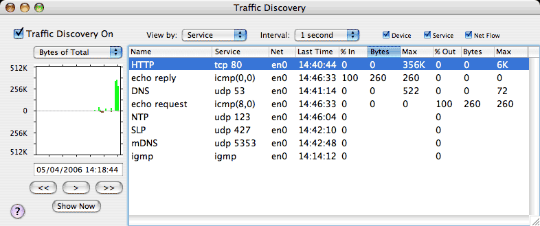
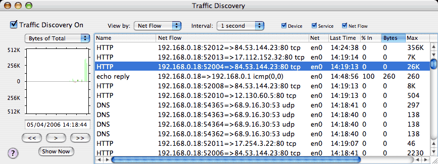
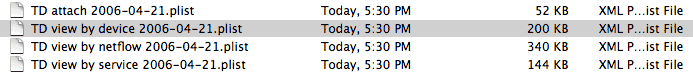

Traffic Discovery is used to examine traffic on your network in more detail. When Traffic Discovery is enabled (upper left), IPNetRouterX keeps a record of each data flow between network endpoints. You can then view traffic by network Service, Device, or connection flow (Net Flow).
The table in the window shows each Device (Service or Netflow) recorded during the current day including which network port was used, the last time traffic was seen, and traffic statistics for the last time interval. The plot along the left shows receive data in green and transmit data in red. Darker bars indicate the traffic corresponding to the first selected row (Device or Service), while lighter bars indicate the total of all network traffic. Using the common video recorder controls under the graph, you can move forward or backward in time to examine any previously recorded interval. You can also pause playback, and then resume from any point in time. The date and time shown corresponds to the right most edge of the plot. You can even enter dates directly (followed by Enter) to view the corresponding interval.
Using the Interval menu above the table, you can summarize traffic statistics over the last minute, hour, or day. By selecting any column in the table header, you can sort the traffic to see which services are using the most network bandwidth.

Finally, you can examine individual netflows to see what specifically was being accessed and when. If you double click on a row in the table, the plot is automatically advanced to the last time the corresponding devices were active.

Traffic Discovery data is saved to disk in "/Library/Logs/IPNetRouterX/Traffic Discovery" with a separate log file for each traffic view and day.

Depending your network, these files may grow quite large. The checkboxes above the table allow you to selectively disable traffic views you are not interested in.
Traffic Discovery allows you to examine how your network is being used, see what actually happens as you access various services, and audit for undesirable activity. As you identify traffic that is either undesirable or using more bandwidth than necessary, you can either walk back the problem chain, or use the rate limiting features in IPNetRouterX to allocate network bandwidth to better match your own priorities.
You can use the up/down arrow keys to move the selected row in the table, and the "right/left" arrow keys to move the plot forward or backward in time. If you double click on a row in the table, the plot is automatically advanced to the last time the corresponding devices were active.
The plot automatically rescales itself to fit the largest traffic seen. In some cases, the background traffic may be so large that it obscures the traffic of interest. Using the "plot type" popup menu immediately above the plot, you can select "Bytes" to see just the data for the first selected row, or "Percent" to see the percent of the total traffic.
You can select multiple rows in the table and then copy them to the clipboard as tab-separated-values to paste into an Email message or spreadsheet. If you include the first row in your selection, the table headers will also be copied.
Clicking on any column heading will deselect all rows.